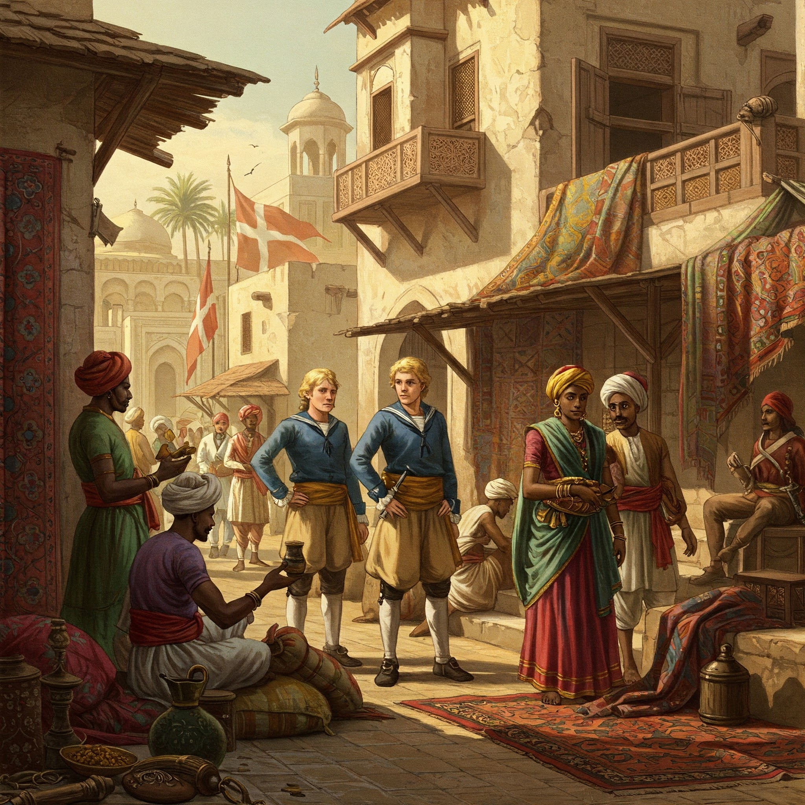

15. The Danish in India – A Modest but Noteworthy Presence
Arrival and Background
The Danish East India Company was founded in 1616 under the reign of King Christian IV of Denmark.
Inspired by the success of other European powers like the Portuguese, Dutch, and English, the Danes wanted a share in the lucrative spice and textile trade of the Indian Ocean.
Denmark, though a relatively small European power, had strong maritime capabilities and sought to expand its global trade network.
Unlike the Portuguese, the Danes were not interested in missionary activities or empire-building but were focused on commerce and peaceful trade.
Key Danish Settlements in India
1. Tranquebar (Tharangambadi), Tamil Nadu
- The Danes acquired Tranquebar in 1620 from the King of Thanjavur, Raghunatha Nayak, by signing a treaty that allowed them to build a trading post and fort.
- They constructed Fort Dansborg, which became the headquarters of the Danish East India Company in India.
- Tranquebar developed into a prosperous trading hub, exporting cotton textiles, spices, pearls, and dyes (like indigo).
- The town also became a center for Lutheran missionary activity. The first Protestant mission in India was established here in 1706 by Bartholomäus Ziegenbalg, a German missionary under Danish patronage.
- He translated the Bible into Tamil, printed books using one of India’s earliest printing presses, and introduced modern education to the local population.
2. Serampore, West Bengal
- Acquired in 1755, Serampore (formerly known as Frederiksnagore) was a strategic location near Calcutta on the banks of the Hooghly River.
- It became a key center for jute, silk, muslin, and shipbuilding.
- The Danes allowed Baptist missionaries like William Carey and others to work in Serampore when the British had initially banned them from Calcutta.
- Serampore College, established in 1818, became a renowned institution of higher education and still exists today.
- The town's architecture, including colonial mansions, churches, and cemeteries, reflects Danish heritage.
Danish Trade and Activities
- Danish trade in India was moderate in scale compared to that of the British or Dutch.
- Their ships were engaged in triangular trade between India, Africa, and Europe.
- Exports: cotton, pepper, textiles, dyes
- Imports: silver, horses, firearms
Decline and Exit
- By the early 19th century, the Danish East India Company suffered from financial losses, administrative inefficiency, and competition from larger colonial powers.
- The British East India Company had grown overwhelmingly powerful in India and had taken over key trade routes.
- In 1845, the Danes sold Tranquebar and Serampore to the British, ending Danish colonial activity in India.
- Many Danish officials and settlers returned home, and their forts and buildings were absorbed into the British administrative system.
Legacy of the Danes in India
- Though small in scale, Danish influence in India was culturally significant.
- Their contribution to education, printing, and missionary work was impactful, particularly in Tamil Nadu and West Bengal.
- Fort Dansborg in Tranquebar is now a museum, preserving Indo-Danish history.
- Serampore remains home to historic churches, missionary buildings, and Serampore College, a UNESCO-recognized heritage institution.